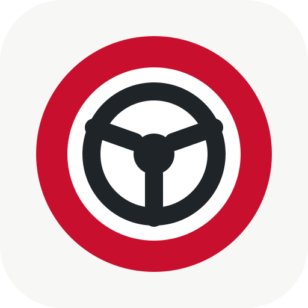

KjørerapportKlar for en tur?
Fest telefonen i holderen. Ledsageren starter og stopper opptaket.
Slik fungerer det
- 1Fest telefonen i en holder med skjermen mot ledsageren.
- 2Ledsageren trykker «Start» når sjekkene er grønne. Føreren rører ikke telefonen.
- 3Hold «Stopp» inne i ett sekund når turen er over. Rapporten kommer med én gang.
Ingen poeng, lyder eller tilbakemelding underveis.
Turer
Før du kjører
-
1
Fest telefonen
Godt i en holder, med skjermen mot ledsageren. Føreren skal ikke røre telefonen under kjøring.
Hva øver dere på i dag? (velg opptil tre)
-
2
Gi tilgang
Appen trenger posisjon og bevegelse. Alt lagres bare på telefonen.
-
3
Sjekker sensorene
- GPS-nøyaktighet 20 m eller bedre
- Bevegelsesdata
- Kamera ser føreren (test)
- Telefonen står stødig (anbefalt)
- GPS-nøyaktighet 20 m eller bedre
0:00
0,0 km
Ledsager: trykk på det dere skal snakke om etterpå
Rapport
Kjørelogg
Kamera
Frontkameraet følger hvor føreren ser: rett fram, i speilene eller over skulderen. Bildene vises bare her og lagres aldri. Under kjøring lagres bare hodets vinkler.
Eksperimentelt. Kameraet ser hodet, ikke øynene, så korte blikk med bare øynene kan bli borte. Sett telefonen i holderen der den står under kjøring, med ansiktet godt synlig.
Tar rundt 30 sekunder. Telefonen leser opp hvor du skal se: rett fram, venstre speil, høyre speil og bakspeilet.
Ser ikke ansiktet
Siste blikk
- Se i et speil, så dukker det opp her.
Faresteder
Opplæring
Innstillinger
Vurdering
Følsomhet
Hvor strengt hendelser skal vurderes. Gjelder også gamle turer.
Analysemotor
v3 (standard) måler bremsing og gass med akselerometeret, kalibrert mot GPS. v1 bruker bare GPS-fart, som prototypen.
Avanserte terskler
Grensene i m/s² før følsomheten over brukes. «Brå» gir lite trekk, «kraftig» gir mer. Endrer alle turer.
Førere og mål
Førere
Velg hvem som kjører før hver tur. Hjemskjermen viser da utvikling per fører.
Mål
Valgfritt. Sammenlignes med snittet av de tre siste turene. Tomt felt betyr ingen mål.
Kart og nettjenester
Når disse er på, sendes rutens posisjoner til tjenestene når en rapport åpnes med nett. Ingenting annet sendes. Svarene lagres på telefonen, så rapporten virker uten nett etterpå.
Etter turen
Påminnelse i bilen
iPhone kan minne deg på appen når telefonen kobler seg til bilens Bluetooth. Det settes opp én gang i appen Snarveier:
- 1Åpne Snarveier, velg Automatisering nederst og trykk +.
- 2Velg Bluetooth, velg bilen din og Kjør umiddelbart.
- 3Legg til handlingen Vis varsel med teksten «Husk Kjørerapport – fest telefonen i holderen».
- 4Trykk Ferdig. Neste gang du setter deg i bilen, kommer varselet, og du åpner appen fra Hjem-skjermen.
Bruk ikke «Åpne URL»: den åpner Safari, og der ligger ikke turene dine. Appen på Hjem-skjermen har sin egen lagring.
Utseende
Data
Sikkerhetskopi
Én fil med alle turer, rådata og innstillinger (førere, mål, opplæringsplan, terskler). Gjenoppretting hopper over turer som finnes fra før.
Én tur
Rådata som JSON-fil, for eksempel til trafikklæreren.
Vedlikehold
Om appen
Appen er i testfase. Fortell gjerne hva som stemte og hva som ikke stemte. Det er sånn den blir bedre.
Utvikler
Spiller demoturen gjennom opptakeren, lagringen og rapporten, som om sensorene leverte dataene.
Turene lagres bare på denne telefonen. Testversjon – målingene er veiledende og erstatter ikke ledsager eller trafikklærer.
Kjørerapport versjon 0.8.0